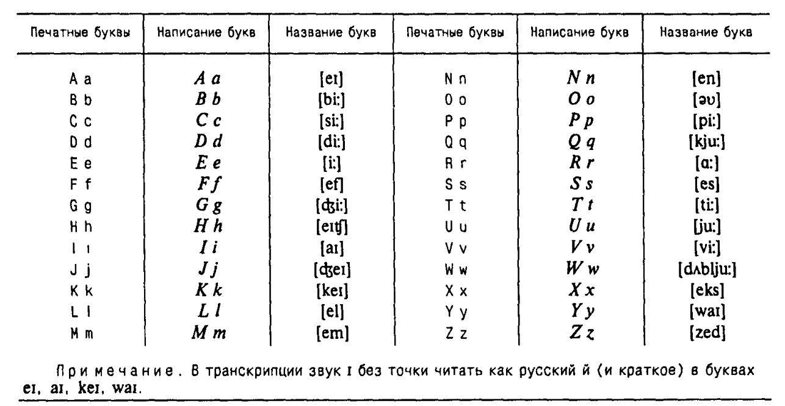
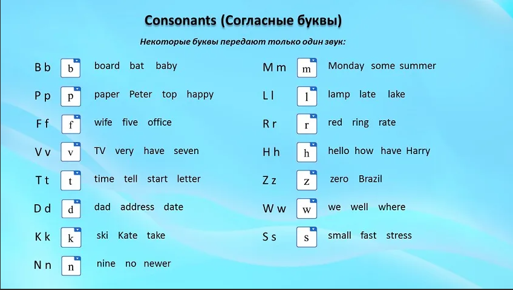

В английской (британской) системе произношения - 44 звука, которые разделяются на 24 согласных и 20 гласных, включая 8 дифтонгов. В следующей таблице приведены отдельные английские звуки и соответствующие им знаки английской транскрипции, а также примеры слов, в которых они произносятся.
При артикуляции звука, воздушный поток встречает на своем пути преграды, образованные органами речи: языком, губами, зубами и альвеолами. Проходя через эти преграды, воздух проходит через щель и создается шум.
